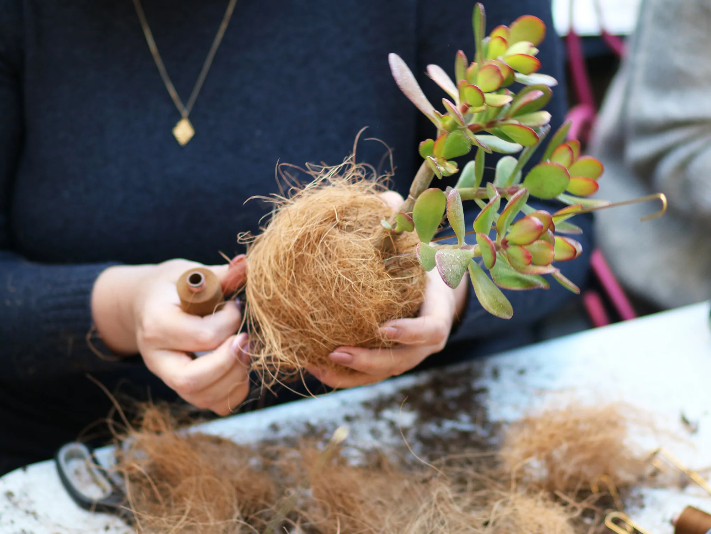

Si vous souhaitez participer à des ateliers en individuel, jetez un œil ci-dessous pour voir ce qui est prévu

Atelier Planteplaneter
Dans cet atelier, nous créons la plante suspendue populaire Hoya. L'atelier se déroule dans un petit espace créatif à Vesterbro.
375 kr